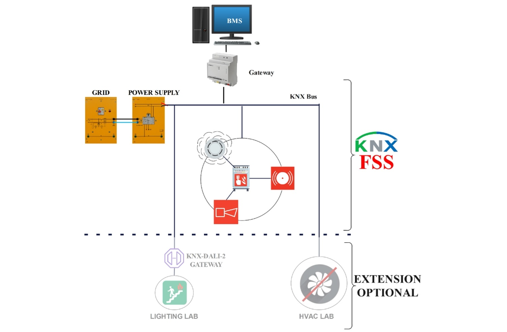

Fire Safety System Lab
FSS and its Role in Smart Building
A Fire Safety System (FSS) is an integrated system that combines detection, alarm, and control functions to prevent fires, reduce fire risks, and protect lives and property.
In Smart Building, the FSS not only fulfills the traditional role of fire detection and alarm but also integrates with
Building Management Systems (BMS)
to enable real-time monitoring of fire hazards, optimize emergency response processes, and achieve more efficient fire management and building safety assurance.
Mission of the FSS Lab
DL's FSS Teaching Laboratory is dedicated to providing students and industry professionals with a learning platform that simulates fire scenarios and smart building environments. The laboratory aims to equip participants with advanced skills in designing, installing, and operating fire safety systems. With a focus on practical applications combined with theoretical instruction, the laboratory fosters the development of professionals capable of addressing future fire safety challenges in smart buildings.
Learn more about our
DL Smart Building Solutions.
